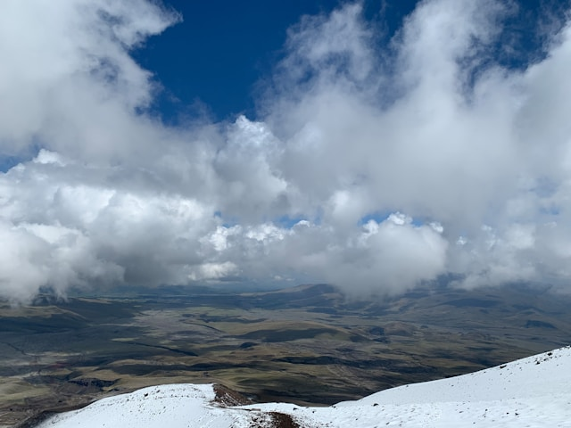
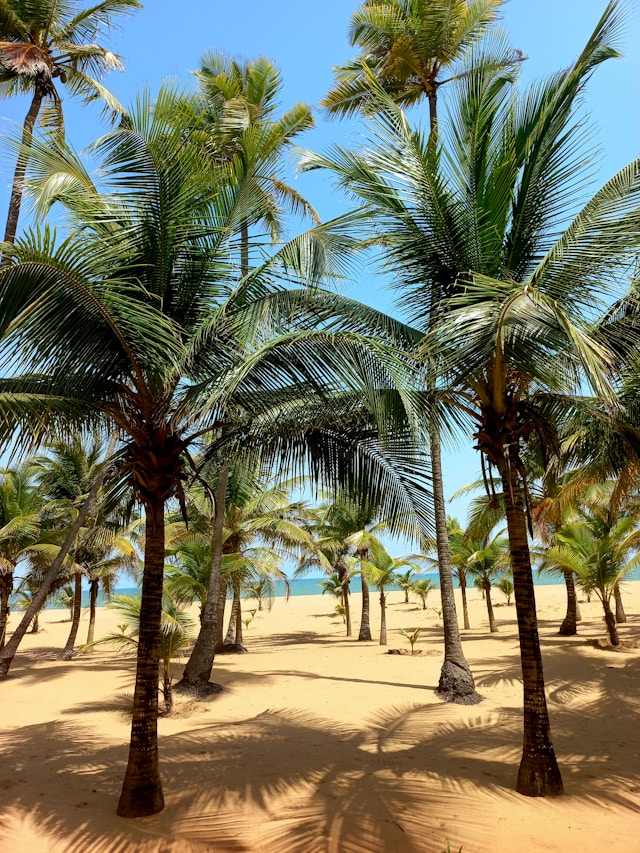
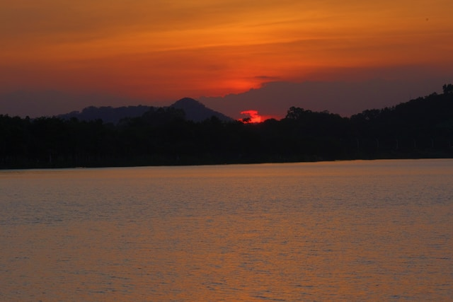

Masai Mara Big Five Safari
Duration: 7 Days
Price: $2,499 per person
Itinerary:
- Day 1-2: Arrive in Nairobi, acclimatization and city tour
- Day 3-6: Game drives in Masai Mara seeking lions, leopards, buffalo, rhinos, and elephants
- Day 7: Visit Maasai village and learn traditional customs
- Day 8: Return to Nairobi and depart

Amboseli Elephant Paradise
Duration: 5 Days
Price: $1,899 per person
Itinerary:
- Day 1: Travel to Amboseli National Park
- Day 2-4: Dedicated elephant viewing and photography with Kilimanjaro backdrop
- Day 5: Sunrise game drive and cultural interaction with Maasai pastoralists
- Day 6: Return to Nairobi

Maasai Cultural Immersion
Duration: 4 Days
Price: $1,599 per person
Itinerary:
- Day 1: Drive to Maasai community villages
- Day 2: Meet warriors, learn about traditions, participate in tribal ceremonies
- Day 3: Experience daily village life, traditional cooking, and crafts
- Day 4: Visit local markets and return to Nairobi

Lake Nakuru Flamingo Discovery
Duration: 3 Days
Price: $999 per person
Itinerary:
- Day 1: Travel to Lake Nakuru National Park
- Day 2: Full day game drives viewing flamingos, pelicans, and rhinos
- Day 3: Morning photography and return to Nairobi

Mount Kenya Adventure Expedition
Duration: 6 Days
Price: $2,199 per person
Itinerary:
- Day 1-2: Arrive in Nairobi, trek preparation and acclimatization
- Day 3-5: Summit attempt via Sirimon Route with high-altitude camping
- Day 6: Descent and celebration of mountain conquering

Mombasa Beach & Coral Reef Experience
Duration: 4 Days
Price: $1,299 per person
Itinerary:
- Day 1: Fly to Mombasa coastal paradise
- Day 2: Snorkeling at coral reefs and beach relaxation
- Day 3: Explore Mombasa Old Town historical sites and Swahili culture
- Day 4: Leisure time and return to Nairobi

Tsavo Red Dust Safari Adventure
Duration: 5 Days
Price: $1,699 per person
Itinerary:
- Day 1-2: Travel to Tsavo East National Park
- Day 3-4: Explore distinctive red landscape, Mudanda Rock viewpoint, and wildlife
- Day 5: Optional visit to Tsavo West and water holes before return
- Day 6: Return to Nairobi

Lake Victoria Cultural & Wildlife Tour
Duration: 6 Days
Price: $1,899 per person
Itinerary:
- Day 1-2: Arrive in Kisumu, visit Lake Victoria
- Day 3: Island hopping and bird watching on the lake
- Day 4-5: Experience Luo community culture, traditional fishing, and local cuisine
- Day 6: Return to Nairobi